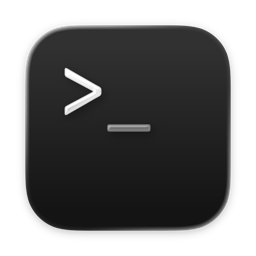
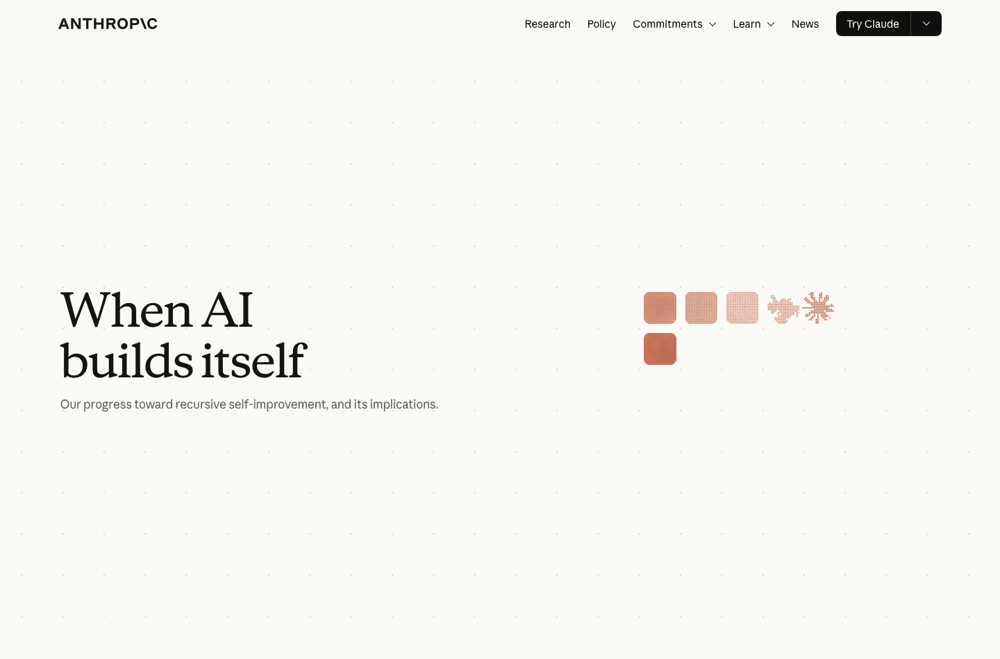
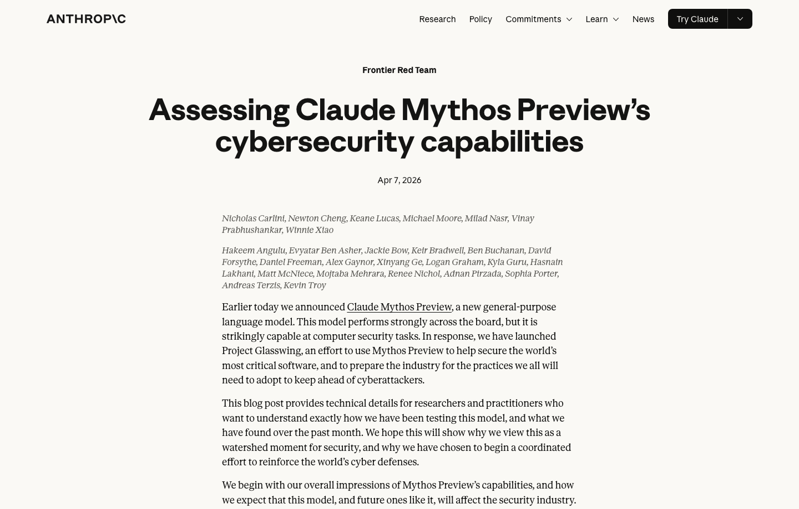
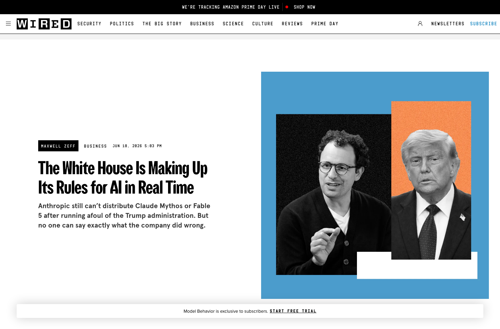

답변형 AI에서실행형 업무 환경으로
AI는 답변을 받는 도구를 넘어,파일과 기준을 함께 다루는 실행 환경으로 확장되고 있습니다.
답을 받는 공간

일을 끝내는 공간
AI를 잘 쓰는 법보다, AI와 일하는 구조를 봐야 합니다.
저는 AI 전문가도, 개발자도 아닙니다.그래서 기술 해설보다, 실제 업무에서 무엇이 달라졌는지를 이야기하겠습니다.
Agentic AI는 이미 왔고,남은 문제는 운영입니다.
AI가 자료를 읽고 도구를 쓰는 시대가 되었기 때문에, 이제 회사는 무엇을 맡기고 어떻게 검증할지 정해야 합니다.
답변을
받았다
챗봇은 답을 주지만, 자료 이동과 실행은 사람이 다시 처리했습니다.
AI가
실행한다
Agentic AI는 파일을 읽고, 도구를 쓰고, 결과를 보며 다시 시도합니다.
운영 기준을
만든다
업무에 쓰려면 기준, 권한, 증거, 책임이 남는 구조가 필요합니다.
AI는 개인 실험을 넘어,관리되는 업무 환경으로 들어옵니다.
삼성은 보안과 권한 체계 안에서 AI를 업무에 넣고, Anthropic은 AI 개발 업무 일부를 AI에 맡기고 있습니다.
보안·권한 체계 안으로
AI가 들어옵니다.
한국 전 임직원과 전 세계 DX 부문에 ChatGPT Enterprise와 Codex를 제공하는 대규모 업무 전환 사례입니다.

AI 개발 업무 일부도
AI가 수행합니다.
완전한 자가개선은 아니지만, 코딩과 실험 실행처럼 개발 과정의 일부가 AI에게 위임되고 있습니다.
AI의 변화는 답변 품질보다,작업 루프의 변화입니다.
손으로 만들던 일은 챗봇과 보조도구를 거쳐, 지금은 agentic AI 흐름으로 이동하고 있습니다.
강해진 모델은 기능보다운영 이슈를 먼저 만듭니다.
Mythos Preview는 재현 가능한 보안 문제에서 증거 생성까지 들어온 사례이고, Fable/Mythos 접근 제한은 통제 이슈가 커졌다는 신호입니다.

재현 가능한 문제에서는
AI가 증거까지
만듭니다.
취약점 탐색은 단순 생성이 아니라 재현과 확인이 필요한 기술 작업입니다.

고성능 모델은
접근통제 이슈가
됩니다.
성능이 강해질수록 도입은 기능 문제가 아니라 보안·권한·운영 문제로 바뀝니다.
재현 가능한 기술 문제에서는검증 방식도 달라집니다.
AI가 만든 결과를 사람이 하나씩 보는 방식만으로는 부족합니다. 업무별로 검증 가능한 증거 구조가 필요합니다.
AI가 많이 만들수록
사람이 하나씩 확인했습니다.
초안, 코드, 리서치가 빠르게 쌓여도 사람이 읽고 대조하고 맞는지 확인해야 전체 업무가 끝났습니다.
재현 가능한 영역에서는
AI가 증거까지 만듭니다.
취약점처럼 결과가 재현되는 문제에서는 AI가 탐색, 재현, 공격 가능성 확인까지 수행할 수 있습니다.
AI를 업무로 쓰려면,먼저 기준이 있어야 합니다.
AI가 확인할 수 있는 조건, 증거, 예외, 책임 구조가 있어야 실제 업무로 맡길 수 있습니다.
조건
무엇을 통과로 볼 것인지 업무 기준을 문장으로 정합니다.
증거
무엇을 보면 맞다고 판단할 수 있는지 산출물과 로그로 남깁니다.
예외
어떤 경우는 틀렸다고 볼 것인지 실패 사례와 금지 조건을 둡니다.
책임
AI가 좁힌 후보를 누가 승인하고 책임질지 최종 판단 구조를 둡니다.
사례가 달라도, 먼저 만든 것은업무 기준이었습니다.
RnD, GROWA, 발표자료, Obsidian은 모두 AI가 읽고 판단할 수 있는 입력값을 만드는 과정이었습니다.
근거 매핑
자료를 요약한 것이 아니라, 근거와 누락을 비교할 수 있게 만들었습니다.
조건표 분해
ACU 기능과 고객 Q&A를 역할, 흐름, 화면 판단 기준으로 바꿨습니다.
논리 구조
대표와 청중 관점에서 중심 질문, 근거, 순서를 계속 다시 잡았습니다.
판단 기록
다음 세션에서 이어서 일할 수 있게 대화, 파일, 기준을 남겼습니다.
RnD에서는 결과보다 먼저근거 구조를 정리했습니다.
연구노트, 특허, 시험자료를 연결해 무엇이 근거이고 무엇이 비어 있는지 나눴습니다.
흩어진 자료를 같은 판단판 위에 올렸습니다.
검토
AI가 항목을 비교하고, 같은 주장과 다른 증거를 연결했습니다.
보완 지점이
드러납니다.
결론을 대신 쓰게 한 것이 아니라, 사람이 판단할 근거 구조를 만든 것입니다.
GROWA는 화면 설계보다 먼저업무 조건을 분해했습니다.
기존 ACU 기능과 고객 Q&A를 화면 목록이 아니라 역할, 상태, 답변 흐름으로 다시 나눴습니다.
기능과 화면을
먼저 분류
계정, 강의, 출석, 과제, Q&A, 통계를 유지·변형·통합 대상으로 나눴습니다.
질문을
업무 조건으로
고객 질문을 데모, 부록, 검증 질문으로 분리해 대응 위치를 정했습니다.
화면 전에
작동 기준
B1 정책부터 B7 분석까지 흐름을 잡고, 14개 Step으로 화면과 데모 액션을 연결했습니다.
발표자료는 화면보다 먼저,논리 구조를 검토했습니다.
대표와 청중이 어떤 순서로 받아들일지, 근거와 메시지의 연결을 계속 점검했습니다.
HTML 장표 시스템화
스토리, 근거, 화면, 검토 기준을 분리해 다음 발표에도 이어 쓸 수 있게 만들었습니다.
구조
작업 기록은 저장이 아니라,다음 작업의 입력입니다.
Obsidian에 남긴 메모와 기준은 다음 AI 작업에서 다시 읽히는 업무 컨텍스트가 됩니다.
AI가 다시 읽는
업무 맥락
기억을 기대하는 것이 아니라, 다음 세션에서 바로 이어갈 입력값을 남깁니다.
대화
무엇을 요청했고 어떤 판단을 했는지 남깁니다.
파일
어떤 자료와 산출물을 기준으로 작업했는지 연결합니다.
기준
다음 세션에서도 같은 판단 기준으로 이어갑니다.
기준이 쌓이면 설명은 줄고,위임 범위는 커집니다.
핵심은 짧은 프롬프트가 아니라, AI가 다시 읽고 실행할 수 있는 업무 기준이 남는 구조입니다.
AI에게 맡길 수 있는 업무판
이 발표의 목적, 대상, 자료 위치, 원하는 톤, 판단 기준, 수정 방향까지 모두 설명해야 합니다.
앞서 만든 흐름과 근거, 디자인 기준을 유지해 대표 관점으로 다시 정리해줘.
저장된 기준과 캡처를 비교해 어색한 문장과 여백을 고쳐줘.
같은 규칙으로 다음 장표도 정리해줘.
해줘!
클라우드 AI는 빠르게 시작하지만,계속 쓸수록 비용 구조를 봐야 합니다.
구독료와 사용량 비용을 감당하려면, 어떤 업무에 AI를 쓸지 먼저 정해야 합니다.
사용자 수만큼
구독료가 쌓입니다.
ChatGPT Business는 사용자 단위로 과금되고, 팀 전체로 확산되면 고정비가 됩니다.
에이전트 작업은
사용량 비용이 붙습니다.
Codex와 Claude Code는 긴 컨텍스트, 반복 실행, 에이전트 작업에서 비용 관리가 중요해집니다.
Claude Code: token / CCU based usage
그래서 먼저
업무 기준을
쌓아야 합니다.
비용을 줄이려면 도구를 줄이는 것이 아니라, 어떤 업무가 반복되고 검증 가능한지 먼저 알아야 합니다.
로컬 LLM은 결론이 아니라,운영 선택지 중 하나입니다.
내년에 검토할 것은 특정 모델명이 아니라, 어떤 업무를 어떤 조건에서 로컬 후보로 볼 수 있는지입니다.
선택지는
비용 기준 위에서
판단합니다.
같은 기준으로 보면 모델 크기보다 중요한 것은 필요한 GPU 메모리, 서버 비용, 맡길 업무입니다.
AI를 쓰는 것이 아니라,AI가 일할 수 있는 구조를 설계합니다.
지금 필요한 것은 도구를 더 늘리는 일이 아니라, 반복 업무를 AI가 읽고 실행하고 확인할 수 있는 업무판입니다.